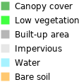

<!doctype html>
<html lang="en">
    <head>
        <meta charset="utf-8">
        <meta http-equiv="X-UA-Compatible" content="IE=edge">
        <meta name="viewport" content="initial-scale=1,user-scalable=no,maximum-scale=1,width=device-width">
        <meta name="mobile-web-app-capable" content="yes">
        <meta name="apple-mobile-web-app-capable" content="yes">
        <link rel="stylesheet" href="css/leaflet.css">
        <link rel="stylesheet" href="css/qgis2web.css"><link rel="stylesheet" href="css/fontawesome-all.min.css">
        <link rel="stylesheet" href="css/leaflet-control-geocoder.Geocoder.css">
        <link rel="stylesheet" href="css/leaflet-measure.css">
        <style>
        html, body, #map {
            width: 100%;
            height: 100%;
            padding: 0;
            margin: 0;
        }
        </style>
        <title>Szeged land cover 2019</title>    </head>
    <body>
    <logo>
        <div id="logo">
        
        </div>
    </logo>
        <div id="map">
        </div>
        <script src="js/qgis2web_expressions.js"></script>
        <script src="js/leaflet.js"></script>
        <script src="js/leaflet.rotatedMarker.js"></script>
        <script src="js/leaflet.pattern.js"></script>
        <script src="js/leaflet-hash.js"></script>
        <script src="js/Autolinker.min.js"></script>
        <script src="js/rbush.min.js"></script>
        <script src="js/labelgun.min.js"></script>
        <script src="js/labels.js"></script>
        <script src="js/leaflet.wms.js"></script>
        <script src="js/leaflet-control-geocoder.Geocoder.js"></script>
        <script src="js/leaflet-measure.js"></script>
        <script src="data/Outsideurbanfootprint_1.js"></script>
        <script src="data/Urbanfootprint_2.js"></script>
        <script src="data/SzegedAOI_3.js"></script>
        <script>
        var map = L.map('map', {
            zoomControl:true, maxZoom:17, minZoom:3
        }).fitBounds([[46.24493787473885,20.130583833360937],[46.260150208324056,20.163318512479098]]);
        var hash = new L.Hash(map);
        map.attributionControl.setPrefix('<a href="https://github.com/tomchadwin/qgis2web" target="_blank">qgis2web</a> &middot; <a href="https://leafletjs.com" title="A JS library for interactive maps">Leaflet</a> &middot; <a href="https://qgis.org">QGIS</a>');
        var autolinker = new Autolinker({truncate: {length: 30, location: 'smart'}});
        var measureControl = new L.Control.Measure({
            position: 'topleft',
            primaryLengthUnit: 'meters',
            secondaryLengthUnit: 'kilometers',
            primaryAreaUnit: 'sqmeters',
            secondaryAreaUnit: 'hectares'
        });
        measureControl.addTo(map);
        document.getElementsByClassName('leaflet-control-measure-toggle')[0]
        .innerHTML = '';
        document.getElementsByClassName('leaflet-control-measure-toggle')[0]
        .className += ' fas fa-ruler';
        var bounds_group = new L.featureGroup([]);
        function setBounds() {
        }
        map.createPane('pane_Googlesatelliteimagery_0');
        map.getPane('pane_Googlesatelliteimagery_0').style.zIndex = 400;
        var layer_Googlesatelliteimagery_0 = L.tileLayer('http://www.google.cn/maps/vt?lyrs=s@189&gl=cn&x={x}&y={y}&z={z}', {
            pane: 'pane_Googlesatelliteimagery_0',
            opacity: 1.0,
            attribution: '',
            minZoom: 3,
            maxZoom: 17,
            minNativeZoom: 0,
            maxNativeZoom: 18
        });
        layer_Googlesatelliteimagery_0;
        map.addLayer(layer_Googlesatelliteimagery_0);
        function pop_Outsideurbanfootprint_1(feature, layer) {
            var popupContent = '<table>\
                    <tr>\
                        <td colspan="2">' + (feature.properties['id'] !== null ? autolinker.link(feature.properties['id'].toLocaleString()) : '') + '</td>\
                    </tr>\
                </table>';
            layer.bindPopup(popupContent, {maxHeight: 400});
        }

        function style_Outsideurbanfootprint_1_0() {
            return {
                pane: 'pane_Outsideurbanfootprint_1',
                opacity: 1,
                color: 'rgba(0,0,0,0.3)',
                dashArray: '',
                lineCap: 'butt',
                lineJoin: 'miter',
                weight: 1.0,
                fill: true,
                fillOpacity: 1,
                fillColor: 'rgba(0,0,0,0.3)',
                interactive: false,
            }
        }
        map.createPane('pane_Outsideurbanfootprint_1');
        map.getPane('pane_Outsideurbanfootprint_1').style.zIndex = 401;
        map.getPane('pane_Outsideurbanfootprint_1').style['mix-blend-mode'] = 'normal';
        var layer_Outsideurbanfootprint_1 = new L.geoJson(json_Outsideurbanfootprint_1, {
            attribution: '',
            interactive: false,
            dataVar: 'json_Outsideurbanfootprint_1',
            layerName: 'layer_Outsideurbanfootprint_1',
            pane: 'pane_Outsideurbanfootprint_1',
            onEachFeature: pop_Outsideurbanfootprint_1,
            style: style_Outsideurbanfootprint_1_0,
        });
        bounds_group.addLayer(layer_Outsideurbanfootprint_1);
        map.addLayer(layer_Outsideurbanfootprint_1);
        function pop_Urbanfootprint_2(feature, layer) {
            var popupContent = '<table>\
                    <tr>\
                        <td colspan="2">' + (feature.properties['params'] !== null ? autolinker.link(feature.properties['params'].toLocaleString()) : '') + '</td>\
                    </tr>\
                </table>';
            layer.bindPopup(popupContent, {maxHeight: 400});
        }

        function style_Urbanfootprint_2_0() {
            return {
                pane: 'pane_Urbanfootprint_2',
                opacity: 1,
                color: 'rgba(255,255,255,0.8)',
                dashArray: '',
                lineCap: 'butt',
                lineJoin: 'miter',
                weight: 2.0,
                fill: true,
                fillOpacity: 1,
                fillColor: 'rgba(255,35,35,0.0)',
                interactive: false,
            }
        }
        map.createPane('pane_Urbanfootprint_2');
        map.getPane('pane_Urbanfootprint_2').style.zIndex = 402;
        map.getPane('pane_Urbanfootprint_2').style['mix-blend-mode'] = 'normal';
        var layer_Urbanfootprint_2 = new L.geoJson(json_Urbanfootprint_2, {
            attribution: '',
            interactive: false,
            dataVar: 'json_Urbanfootprint_2',
            layerName: 'layer_Urbanfootprint_2',
            pane: 'pane_Urbanfootprint_2',
            onEachFeature: pop_Urbanfootprint_2,
            style: style_Urbanfootprint_2_0,
        });
        bounds_group.addLayer(layer_Urbanfootprint_2);
        map.addLayer(layer_Urbanfootprint_2);
        function pop_SzegedAOI_3(feature, layer) {
            var popupContent = '<table>\
                    <tr>\
                        <td colspan="2">' + (feature.properties['id'] !== null ? autolinker.link(feature.properties['id'].toLocaleString()) : '') + '</td>\
                    </tr>\
                </table>';
            layer.bindPopup(popupContent, {maxHeight: 400});
        }

        function style_SzegedAOI_3_0() {
            return {
                pane: 'pane_SzegedAOI_3',
                opacity: 1,
                color: 'rgba(255,142,142,0.8)',
                dashArray: '',
                lineCap: 'butt',
                lineJoin: 'miter',
                weight: 3.0,
                fill: true,
                fillOpacity: 1,
                fillColor: 'rgba(255,142,142,0.0)',
                interactive: false,
            }
        }
        map.createPane('pane_SzegedAOI_3');
        map.getPane('pane_SzegedAOI_3').style.zIndex = 403;
        map.getPane('pane_SzegedAOI_3').style['mix-blend-mode'] = 'normal';
        var layer_SzegedAOI_3 = new L.geoJson(json_SzegedAOI_3, {
            attribution: '',
            interactive: false,
            dataVar: 'json_SzegedAOI_3',
            layerName: 'layer_SzegedAOI_3',
            pane: 'pane_SzegedAOI_3',
            onEachFeature: pop_SzegedAOI_3,
            style: style_SzegedAOI_3_0,
        });
        bounds_group.addLayer(layer_SzegedAOI_3);
        map.addLayer(layer_SzegedAOI_3);
        map.createPane('pane_Landcoverclassification_4');
        map.getPane('pane_Landcoverclassification_4').style.zIndex = 404;
        var layer_Landcoverclassification_4 = L.WMS.layer("https://greencitylab.terranis.fr/geoserver/wms?tiled=true", "n4c:2020_szeged_image_occsol_classif_xgboost_v1_final_urbanfootprin", {
            pane: 'pane_Landcoverclassification_4',
            format: 'image/png',
            uppercase: true,
            transparent: true,
            continuousWorld : true,
            tiled: true,
            info_format: 'text/html',
            opacity: 1,
            identify: false,
            attribution: '',
        });
        map.addLayer(layer_Landcoverclassification_4);
            var title = new L.Control();
            title.onAdd = function (map) {
                this._div = L.DomUtil.create('div', 'info');
                this.update();
                return this._div;
            };
            title.update = function () {
                this._div.innerHTML = '<h2><div align="right">Urban land cover classification using Sentinel imagery<br><font size="-1">Szeged city - Hungary | 2019</font></div></h2>';
            };
            title.addTo(map);
        var osmGeocoder = new L.Control.Geocoder({
            collapsed: true,
            position: 'topleft',
            text: 'Search',
            title: 'Testing'
        }).addTo(map);
        document.getElementsByClassName('leaflet-control-geocoder-icon')[0]
        .className += ' fa fa-search';
        document.getElementsByClassName('leaflet-control-geocoder-icon')[0]
        .title += 'Search for a place';
        var baseMaps = {};
        L.control.layers(baseMaps,{'Land cover classification<br> ': layer_Landcoverclassification_4,' Szeged AOI': layer_SzegedAOI_3,' Urban footprint': layer_Urbanfootprint_2,' Outside urban footprint': layer_Outsideurbanfootprint_1,"Google satellite imagery": layer_Googlesatelliteimagery_0,},{collapsed:false}).addTo(map);
        setBounds();
        </script>
    </body>
</html>
